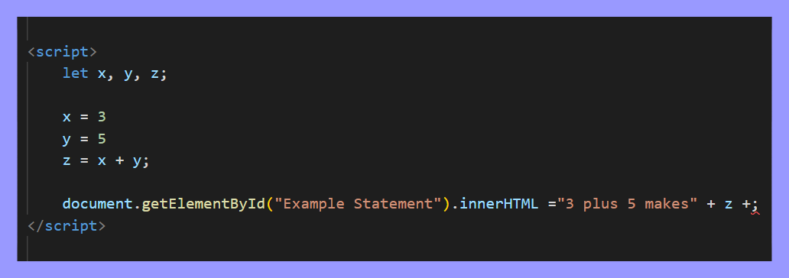

JavaScript is another form of language that works with HTML and CSS to make more complex sites.
Appart from simple shapes, letters, and images - It can add much more user interactivity to the page.
Using JavaScript, you can add things like this button that tells the time!
[Time will be here]
but why add JavaScript? How can this be helpful?
as said previously, JS adds interactivity with the user to the page which can make tons of things like sign-in pages or even games.
But it's also worth to mention another plus towards JavaScript.
When coding, problems will more than likely occur; however, there's no telling where or what.
With JS, it introduces console logs!
by using console logs, it can report issues that appear in the code but will only give you the idea.
To look at the console log, it varries but one way is with Ctrl + Shift + I and to click the "console" tab
Since were talkin about it, why not take a look at it.
Variables can be thought of like x in math.
In terms of the problem, x can mean one thing and one thing only.
With JavaScript in mind, x holds information that applies to THAT page.
there many forms of x that can exist:
Null - "x" that has no value
Undefined - "x" that HAS value but isn't assigned to anything.
Boolean - makes "x" true or false (there or not) based on other values.
String - a combination of values (numbers and words) so like "x" combined with "y".
Number - AKA an integer and is basically just a number.
Bigint - A number that is too large for the computer to handle.
Object - A more complex version of a string as they hold alot more than just variables
Alright, so we have all these forms of variables, but how do we even use them properly?
When you have the variables you want to add, you firsr need to DECLARE them.
Tell the website that "x" exists in the document
There are many different keywords that are used to declare a variable as there is keywords period:
Var - declares a variable that is able to be changed later on in code.
Let - declares a block variable that will always stick with what was named first.
Const - declares a block constant or cannot be changed period (will crash if done so).
as for the ones below, they are more like branches towards declaring as they also serve an ability towards doing so.
If - marks a block of statements to activate when something happens.
Switch - Marks a block of statements to activate in different cases.
For - marks a block of statements to activate in a loop.
Function - declares a function.
Return - exits a function.
Try - implements error handling to a block of statements.
For this example well write "Let x, y, z;"
Now, you need to STATE to the document what "x" means.
So lets write that "x = 3;", "y = 5;" and "z = x + y;"
By using all this stated information, you can combo them in many ways you'd desire
Take a look at the example below, hover over it to see how it looks compiled.
As said in the Console Log, there's a section named "Script" within a document, lets talk about it.
Seeing the example image above, the code of "document.getElementbyId()" is one of the more iconic and easier examples to use in JS
But there's different ways of adding it depending on preference
going back to CSS, we can agree that there are differnt forms of adding styles.
JS is no different
When adding code you can either add it directly to the HTML element, within the head so it stays general, or on a seperate file.
These are Called .js files
Just like CSS, they come with their pros and cons each
External JS - with these, you can create tons of code that combinds with certain HTML elements and easily apply to all files.
Internal JS - Like External, you can make code within the "head" that can combind with HTML elements automatically.
Inline JS - This can work more precicely on certain elements you want to have using JS.